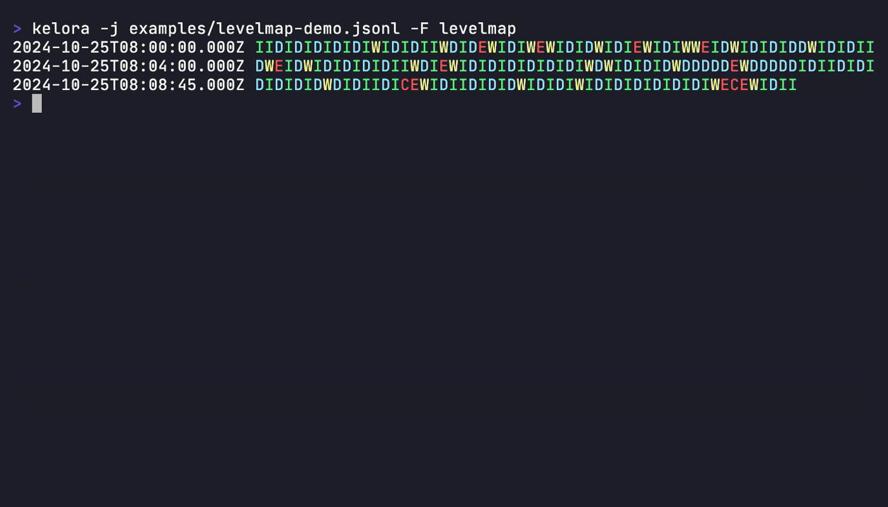

Format Reference¶
Quick reference for all formats supported by Kelora.
Input Formats¶
Specify input format with -f, --input-format <format>.
Overview¶
| Format | Description |
|---|---|
json |
Application logs, structured data (shorthand: -j) |
line |
Unstructured logs, raw text (default) |
logfmt |
Heroku-style logs, simple structured logs |
csv / tsv |
Spreadsheet data, exports |
syslog |
System logs, network devices |
combined |
Apache/Nginx web server access logs |
cef |
ArcSight Common Event Format, SIEM data |
cols:<spec> |
Custom column-based logs |
regex:<pattern> |
Custom regex parsing with named groups and type annotations |
auto |
Auto-detect from first line |
JSON Format¶
Syntax: -f json or -j
Description: JSON Lines format (one object per line). Nested structures preserved.
Input Example:
{"timestamp": "2024-01-15T10:30:00Z", "level": "ERROR", "service": "api", "message": "Connection failed"}
Output Fields: All JSON fields become event fields with original names and types.
Notes:
- Use
-M jsonfor multi-line JSON objects - Preserves field types (strings, numbers, booleans, null)
- Supports nested objects and arrays
Line Format¶
Syntax: -f line (default)
Description: Plain text, one line per event.
Output Fields:
| Field | Type | Description |
|---|---|---|
line |
String | Complete line content |
Notes:
- Default format when no
-fspecified - Empty lines are skipped
- Useful for unstructured logs or custom parsing with
--exec
Logfmt Format¶
Syntax: -f logfmt
Description: Heroku-style key-value pairs.
Input Example:
Output Fields: All key-value pairs become top-level fields.
Notes:
- Supports quoted values:
key="value with spaces" - Keys must be alphanumeric (with underscores/hyphens)
CSV / TSV Formats¶
Syntax:
-f csv- Comma-separated with header-f tsv- Tab-separated with header-f csvnh- CSV without header-f tsvnh- TSV without header
Output Fields:
- With header: Field names from header row
- Without header:
col_0,col_1,col_2, etc.
Type Annotations:
Specify field types for automatic conversion:
Supported types: int, float, bool
Notes:
- Quoted fields supported:
"value, with, commas" - Escaped quotes:
"value with ""quotes"""
Syslog Format¶
Syntax: -f syslog
Description: RFC5424 and RFC3164 syslog messages. Auto-detects format.
Input Examples:
RFC5424:
RFC3164:
Output Fields:
| Field | Type | RFC5424 | RFC3164 | Description |
|---|---|---|---|---|
pri |
Integer | ✓ | ✓* | Priority value (facility * 8 + severity) |
facility |
Integer | ✓ | ✓* | Syslog facility code |
severity |
Integer | ✓ | ✓* | Severity level (0-7) |
level |
String | ✓ | ✓* | Log level (EMERG, ALERT, CRIT, ERROR, WARN, NOTICE, INFO, DEBUG) |
ts |
String | ✓ | ✓ | Parsed timestamp |
host |
String | ✓ | ✓ | Source hostname |
prog |
String | ✓ | ✓ | Application/program name |
pid |
Integer/String | ✓ | ✓ | Process ID (parsed as integer if numeric) |
msgid |
String | ✓ | - | Message ID |
version |
Integer | ✓ | - | Syslog protocol version |
msg |
String | ✓ | ✓ | Log message |
*RFC3164: Only present if priority prefix <NNN> is included
Notes:
- Severity levels: 0=emerg, 1=alert, 2=crit, 3=err, 4=warn, 5=notice, 6=info, 7=debug
Combined Log Format¶
Syntax: -f combined
Description: Apache/Nginx web server logs. Auto-handles three variants:
- Apache Common Log Format (CLF)
- Apache Combined Log Format
- Nginx Combined with request_time
Input Examples:
Common:
Combined:
192.168.1.1 - user [15/Jan/2024:10:30:00 +0000] "GET /api/data HTTP/1.1" 200 1234 "http://example.com/" "Mozilla/5.0"
Nginx with request_time:
192.168.1.1 - - [15/Jan/2024:10:30:00 +0000] "GET /api/data HTTP/1.1" 200 1234 "-" "curl/7.68.0" "0.123"
Output Fields:
| Field | Type | Common | Combined | Nginx | Description |
|---|---|---|---|---|---|
ip |
String | ✓ | ✓ | ✓ | Client IP address |
identity |
String | ✓ | ✓ | ✓ | RFC 1413 identity (omit if -) |
user |
String | ✓ | ✓ | ✓ | HTTP auth username (omit if -) |
ts |
String | ✓ | ✓ | ✓ | Request timestamp |
request |
String | ✓ | ✓ | ✓ | Full HTTP request line |
method |
String | ✓ | ✓ | ✓ | HTTP method (auto-extracted) |
path |
String | ✓ | ✓ | ✓ | Request path (auto-extracted) |
protocol |
String | ✓ | ✓ | ✓ | HTTP protocol (auto-extracted) |
status |
Integer | ✓ | ✓ | ✓ | HTTP status code |
bytes |
Integer | ✓ | ✓ | ✓ | Response size (omit if -, keep if 0) |
referer |
String | - | ✓ | ✓ | HTTP referer (omit if -) |
user_agent |
String | - | ✓ | ✓ | HTTP user agent (omit if -) |
request_time |
Float | - | - | ✓ | Request time in seconds (omit if -) |
Notes:
- Parser auto-detects variant per line
- Fields with
-values omitted (exceptbytesincludes0)
CEF Format¶
Syntax: -f cef
Description: ArcSight Common Event Format for security logs.
Input Example:
Output Fields:
Syslog prefix (optional):
| Field | Type | Description |
|---|---|---|
ts |
String | Timestamp from syslog prefix |
host |
String | Hostname from syslog prefix |
CEF header:
| Field | Type | Description |
|---|---|---|
cefver |
String | CEF format version |
vendor |
String | Device vendor name |
product |
String | Device product name |
version |
String | Device version |
eventid |
String | Event signature ID |
event |
String | Event name/classification |
severity |
String | Event severity (0-10) |
Extensions: All extension key=value pairs become top-level fields with automatic type conversion (integers, floats, booleans)
Column Format¶
Syntax: -f 'cols:<spec>'
Description: Custom column-based parsing with whitespace (or custom separator) splitting.
Separator: Use --cols-sep <separator> for custom separators (default: whitespace)
Specification Syntax:
field- Consume one columnfield(N)- Consume N columns and join-or-(N)- Skip one or N columns*field- Capture remaining columns (must be last)field:type- Apply type annotation (int,float,bool,string)
Examples:
Simple fields:
Multi-token timestamp:
# Input: 2024-01-15 10:30:00 INFO Connection failed
kelora -f 'cols:ts(2) level *msg' app.log --ts-field ts
Custom separator:
Output Fields: Field names from specification with applied type conversions.
Notes:
*fieldmust be the final token
Regex Format¶
Syntax: -f 'regex:<pattern>'
Description: Parse logs using regular expressions with named capture groups and optional type annotations.
Pattern Syntax:
(?P<name>pattern)- Named capture group (field stored as string)(?P<name:type>pattern)- Named capture group with type annotation
Supported Types: int, float, bool (lowercase only)
Examples:
Simple extraction:
Structured logs:
# Input: 2025-01-15T10:00:00Z [ERROR] Database connection failed
kelora -f 'regex:^(?P<ts>\S+) \[(?P<level>\w+)\] (?P<msg>.+)$' app.log
Apache-style logs with typed fields:
# Input: 192.168.1.1 - - [15/Jan/2025:10:00:00 +0000] "GET /api/users HTTP/1.1" 200 1234
kelora -f 'regex:^(?P<ip>\S+) - - \[(?P<timestamp>[^\]]+)\] "(?P<method>\w+) (?P<path>\S+) HTTP/[\d.]+" (?P<status:int>\d+) (?P<bytes:int>\d+)$' access.log
Output Fields: Field names from capture groups with applied type conversions.
Behavior:
- Full-line matching: Pattern implicitly anchored with
^...$ - Empty captures: Skipped (not stored as fields)
- Non-matching lines:
- Default (lenient): Returns error, line skipped, processing continues
- With
--strict: Returns error, processing halts
- Type conversion failures (e.g.,
"abc"for:int):- Default (lenient): Automatically falls back to storing as string
- With
--strict: Returns error, processing halts
Reserved Field Names:
The following names cannot be used: original_line, parsed_ts, fields
Limitations:
- Nested named capture groups are not supported
- Type annotations must be lowercase (
:int, not:INT)
Notes:
- Use raw strings in shell to avoid escaping issues:
-f 'regex:...' - Combine with
--ts-fieldto specify which field contains the timestamp - Non-capturing groups
(?:...)are supported
Auto-Detection¶
Syntax: -f auto
Description: Automatically detect format from first non-empty line.
Detection Order:
- JSON (starts with
{) - Syslog (starts with
<NNN>) - CEF (starts with
CEF:) - Combined (matches Apache/Nginx pattern)
- Logfmt (contains
key=valuepairs) - CSV (contains commas with consistent pattern)
- Line (fallback)
Notes:
- Detects once, applies to all lines
- Not suitable for mixed-format files
Output Formats¶
Specify output format with -F, --output-format <format>.
| Format | Description |
|---|---|
default |
Key-value format with colors |
json |
JSON lines (one object per line) |
logfmt |
Key-value pairs (logfmt format) |
inspect |
Debug format with type information |
levelmap |
Events grouped by log level |
csv |
CSV with header row |
tsv |
Tab-separated values with header row |
csvnh |
CSV without header |
tsvnh |
TSV without header |
none |
No output (useful with --stats or --metrics) |
Levelmap Visual Example:

The levelmap format provides a compact visual representation of logs, showing timestamps and level indicators in a condensed format ideal for quick scanning.
Examples:
kelora -j app.log -F json # Output as JSON
kelora -j app.log -F csv --keys ts,level,msg # Output as CSV
kelora -j app.log -F none --stats # Only stats
See Also¶
- CLI Reference - Complete flag documentation including timestamp parsing, multiline strategies, and prefix extraction
- Quickstart - Format examples with annotated output
- Parsing Custom Formats Tutorial - Step-by-step guide
- Prepare CSV Exports for Analytics - CSV-specific tips